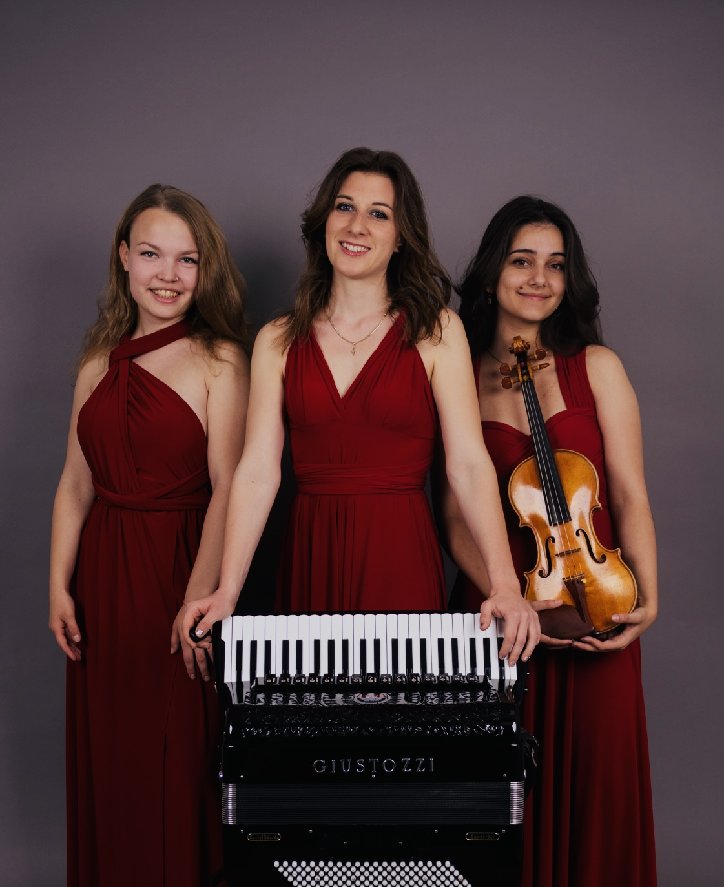
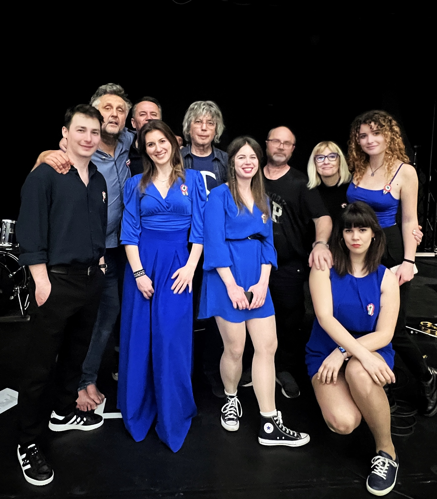

Three Roses Trio

A Three Roses Trio szíve és lelke a Három Rózsa, akik Zeneakadémiai tanulmányaik mellett álmodták meg ezt az egyedülálló formációt.
Borsos Dominika harmonikán, Mákszem Fanni hegedűn, Muhari Eszter zongorán szólaltatja meg az argentin tangók kiemelkedő műveit, saját átirataikban.
Műsorukra többek között Astor Piazzolla műveit tűzték, amelyek bepillantást engednek a Szenvedély, Féltékenység, Látomás megzenésített világába.
Bródy Zenekar

Bródy János a magyar zene, és kultúrtörténet meghatározó alakja, a magyar nyelvű beatzene megteremtője.
Az Illés és a Fonográf tagjaként, zeneszerző-előadóként a hazai kultúra emblematikus alakja lett.
Művészetében követhetően tükröződik az elmúlt fél évszázad történelmének minden jelentős fordulata.
Napjainkban is aktívan koncertező előadóművész, koncertjeit nagy érdeklődés, teltház és egyedülálló hangulat jellemzi.
A Kossuth és Liszt Ferenc díjas gitárost hét fős zenekar kíséri, biztosítva a Történetek, Emlékek és Érzések zenei aláfestését.
Harmonikával a világ körül
Egy zenei utazás a Harmonika sokszínűségének köszönhetően. Francia sanzonok, melyek megidézik Edith Piaf legnépszerűbb dalait.
A pezsdítő musettek, amelyek Párizs hangulatát tárják elénk. Az olasz Dolce Vita, ahol harmonika szól évtizedek óta.
Kellemes dallamok, amelyeket a jazz standardek, valamint a sváb polkák, keringők tesznek változatossá, a világkörüli utazás teljessége érdekében.
Mindegyik dal egy-egy történet, amelyet a harmonika mesél el. Legyen Ön is részese az Élménynek!